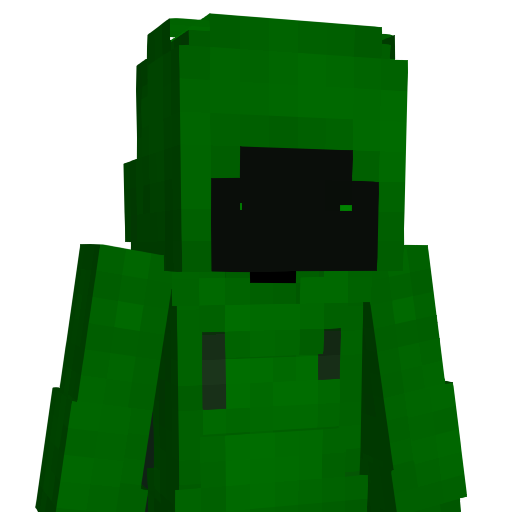

Ludo
Développeur Java & Créateur d'expériences Minecraft
Mon Parcours & Compétences
Mon Parcours
Mes Créations
Mon Parcours Détaillé
Découverte sur Epicube
2016Ma passion pour le développement a pris racine au cœur même de l'expérience Minecraft, en explorant les mondes et les mécaniques de grands serveurs comme Epicube. C'est là que j'ai compris que les seules limites du jeu étaient celles de l'imagination.
Premiers pas avec didileo
2017Inspiré, j'ai fait mes premiers pas en tant que créateur aux côtés de didileo, en construisant des cartes complexes basées sur les command blocks. C'était une première approche de la logique et de l'automatisation qui a éveillé ma curiosité pour aller plus loin.
Apprentissage avec MCreator
2019Cette curiosité m'a naturellement guidé vers des outils comme MCreator, puis vers l'apprentissage du développement Java en suivant les tutoriels de créateurs passionnés comme Gravenilvec.
Développeur Autodidacte
2020-2025Aujourd'hui, c'est en autodidacte que je continue d'évoluer. Je passe des heures à lire la documentation, à décortiquer les forums de Spigot et Bukkit, et à expérimenter pour transformer des idées complexes en plugins stables, performants et qui repoussent les limites du jeu. Chaque projet est une nouvelle aventure.
Contact
Une idée ? Un projet ? Parlons-en.
